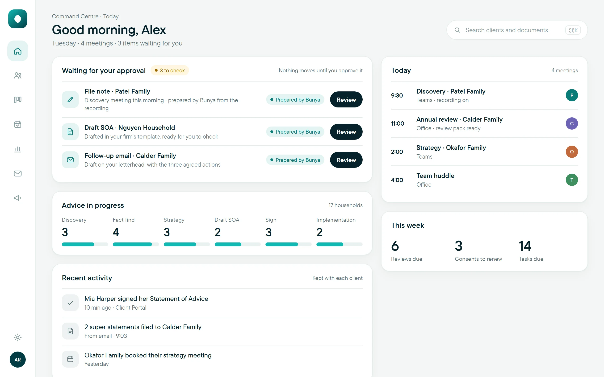

How to reduce admin in a financial advice practice before you hire
Most advice firms don’t run out of people first. They run out of time lost to re-keying, chasing and rework.

How can a financial advice practice reduce admin and grow without hiring?
To reduce admin in a financial advice practice, map one recurring workflow across every role, find where information is re-keyed, searched for or clarified, and standardise it before automating. Let AI prepare repeatable drafts such as file notes and follow-ups, with a person checking each one. Measure total effort before and after, then decide whether to hire.
- Map one workflow across every role: a faster adviser step that creates more checking for support staff isn’t a saving.
- Count checking and correction time in every AI pilot, or the result will look better than it is.
- Released time only becomes capacity when it lands in someone’s diary as usable hours.
Where does an advice practice lose capacity?
It’s 5:40 on a Thursday. You’ve had four client meetings and three file notes are still unwritten. Your client services officer is waiting on the actions so she can send the follow-up emails. On the shared drive, a half-written job ad for another administrator has been open since Monday.
That moment is where most conversations about hiring start. It’s also the best time to ask a different question: how much of this week was the advice itself, and how much was moving information from one place to another? To reduce admin in a financial advice practice, you first need to see where the time actually goes.
In most small firms it goes to four things:
- Re-keying. The same client details typed into a CRM, a spreadsheet, a fact find and an email.
- Searching. Hunting through inboxes and drives for the document someone attached three weeks ago.
- Waiting and clarifying. A task that can’t start because the note behind it isn’t finished, or doesn’t say who owns the next step.
- Rework. Drafts that come back because a figure was wrong or a step was missed.
None of these appears on a timesheet as a single job. They’re spread thinly across every role, which is why a busy team can feel short-staffed even when client numbers haven’t changed much.
How do you find the admin worth fixing first?
Pick one recurring workflow and follow it end to end, across every person who touches it. Meeting follow-up, review preparation and new-client onboarding are good candidates because they happen often enough to observe more than once.
Ask the people doing the work, not just the people managing it. Where do they type the same thing twice? What do they search for? When do they stop and wait for someone else? Record the answers against real examples, not impressions.
Then look across roles. A faster adviser step isn’t a gain if it simply creates more checking for the support team. The aim is less total effort, not effort moved to whoever is least able to push back.
Should you standardise a process before automating it?
Yes. Automating a process that changes every time just produces inconsistent results faster. Before any tool is involved, agree four things for the workflow you chose:
- Inputs: what information has to exist before the work starts.
- Output: what “done” looks like, in the firm’s format.
- Owner: who is responsible for each step, and who checks it.
- Exceptions: what happens when a case doesn’t fit, and who decides.
Some variation is necessary. A complex estate-planning client won’t follow the same path as a simple super consolidation. The point is to know which differences matter and which are just habit. Once the predictable steps are clear, they’re candidates for automation. Keep a route for exceptions, and name someone responsible for checking that the workflow keeps working as intended.
Where does AI genuinely save time in an advice firm?
AI is most useful where the work is preparation: turning material the firm already holds into a first draft for a person to check. In an advice practice that usually means:
- file notes and action lists drafted from a recorded meeting, with the client’s consent;
- follow-up emails written from the agreed next steps;
- a summary of what’s changed since a client’s last review, gathered from emails, documents and meetings;
- a fact find pre-filled from the meeting and documents, with each answer showing where it came from.
It is far less useful where the work is judgement. Strategy, recommendations and the conversation with the client stay with the adviser.
Be honest about checking time. A draft that takes two minutes to produce but fifteen to verify may save nothing. Prefer tools where each point can be traced back to its source, because that’s what makes checking quick. For a closer look at one common starting point, see our guide to AI meeting notes for financial advisers.
What does this look like in a real workflow?
Aynub Financial is a fee-for-service practice in Kingaroy, Queensland, with two advisers and two support staff. Its principal, Mara Holloway, was about to advertise for a third administrator. Instead, she spent a month tracking one workflow: what happens after a client review meeting.
Before any change, each review meeting created about 50 minutes of follow-up across two people. Mara spent 25 minutes writing the file note and 10 drafting the follow-up email. Her client services officer spent 15 minutes clarifying actions, creating tasks and filing documents.
Aynub agreed a standard: a file note in the firm’s format, every action with an owner and a due date, and a follow-up email sent only after Mara approved it. It then piloted AI drafts of the note, actions and email for clients who consented to recording. Mara’s time fell to 15 minutes, mostly checking and correcting. The officer’s fell to 5, because actions arrived with owners attached.
That’s 30 minutes per meeting. Across 20 review meetings a month, it’s 10 hours, split between two people. Mara didn’t cancel the hire. She moved it back six months and used the time to clear the review backlog first.
All names and figures are illustrative, not Bunya performance data.
What should a capacity pilot measure?
Compare like-for-like work before and during the pilot, for every role involved:
| Measure | What it tells you |
|---|---|
| Active effort by role | Whether work is reduced overall or simply moved to someone else. |
| Elapsed time | How long the task waits between starting and finishing. |
| Correction cycles | Whether a faster first draft creates more rework. |
| Missing or wrong items | Whether quality holds up alongside speed. |
| Exceptions | How often someone has to step outside the normal process. |
| Parallel records | Whether people still keep their own spreadsheet “just in case”. |
To estimate released time, subtract the total active effort after the change from the total before it, including checking and correction, then multiply by how often the task happens. Keep setup and training time visible rather than leaving it out.
Two cautions. Hours spread across several people may not add up to usable time in any one diary. And released time doesn’t automatically become savings or revenue; it becomes capacity only when the firm decides what to do with it.
Which workflow should you pilot first?
Use this checklist. A workflow that ticks most of the boxes is a good first pilot:
- It recurs often enough to observe several times a month.
- The team can describe its inputs, owner and finish line.
- There’s visible re-keying, searching or clarifying.
- You can get a baseline from every role involved.
- A named person is available to review outputs and handle exceptions.
- It can run within your licensee’s requirements and your client consent settings.
- You’ve agreed in advance what result would justify expanding, changing or stopping it.
Start small. “Automate the admin” is an ambition; “cut follow-up time after review meetings” is a pilot you can measure. If review preparation is your bottleneck, the client review workflow checklist is a good place to begin.
When is hiring still the right answer?
Sometimes it is. Growth, specialist work such as paraplanning, and the service standard you want to offer may all need more people. A pilot won’t change that, but it will tell you which role you actually need. If the bottleneck turns out to be advice capacity rather than admin, a second adviser may be worth more than a third administrator.
The practical next step is small. This week, pick one workflow, ask everyone who touches it to tally their re-keying, searching and waiting for five working days, and put the results on one page. That page is a better basis for a hiring decision than a busy Thursday afternoon.
How Bunya helps a practice grow without adding admin
Bunya builds your practice system inside your firm’s own Microsoft 365, so client records, documents and approvals stay in your tenancy. Every firm starts with Command Centre: one record per household, client emails and attachments filed to the right client as they arrive, and an advice pipeline showing where every household is up to and what’s waiting on a check. Meeting Notes, included, drafts the file note, actions with a named owner and due date, and a follow-up email from a recorded Teams meeting. Review Packs gather what’s changed before each review.
Bunya prepares the work, and a person on your team approves every step before anything is used or sent. You then add only what your bottleneck needs, such as Advice Engine features like the fact find. Command Centre is priced per client household, from $3 per client household a month. Follow one household through Bunya to see where your team says yes.
Common questions
Does reducing admin mean we won’t need to hire?
Not necessarily. Growth, specialist work and your service standards may still need more people. Reducing admin shows you which role you actually need, and when.
How long should a capacity pilot run?
Long enough to compare like-for-like work across several examples of the task. Agree the length and the success measures before you start, so the decision isn’t made on impressions.
Should every repeated task use AI?
No. Some tasks improve with clearer responsibilities or a simple standard automation. AI suits defined preparation work, and the time spent reviewing its output belongs in the evaluation.
How do we stop admin shifting onto the support team?
Measure effort by role and follow each task through to completion. Involve the people who receive the output in designing and reviewing the pilot.
Which parts of advice work shouldn’t be handed to AI?
Judgement. Setting strategy, making recommendations, approving advice and talking with clients stay with the adviser. AI can prepare drafts for those steps, but a person checks and approves them.
Do we have to replace our current systems to free up time?
No. With Bunya you start with Command Centre, add only the pieces your firm needs and keep the tools that already work. We look at what your firm uses now and agree what to keep, connect or replace.
Sources and scope
General information about running an advice practice, not legal or financial advice; adapt any workflow to your licensee’s requirements and your client consent settings.